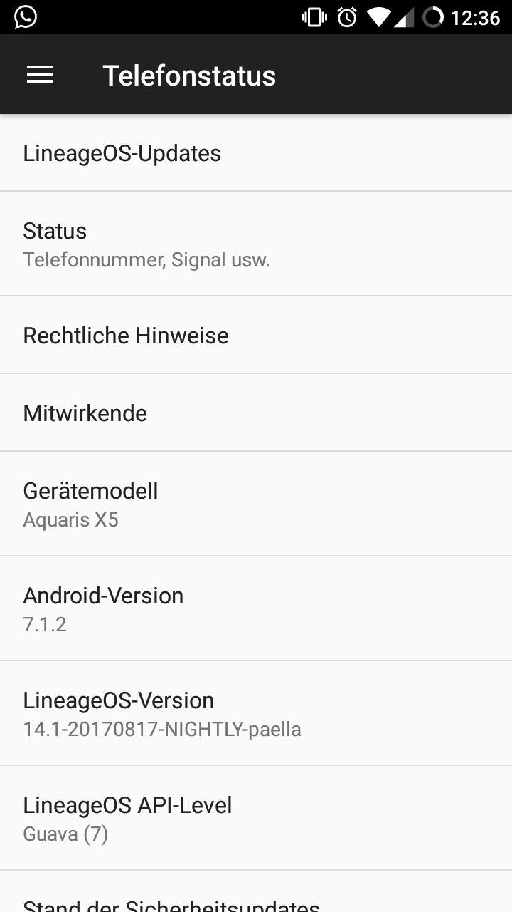
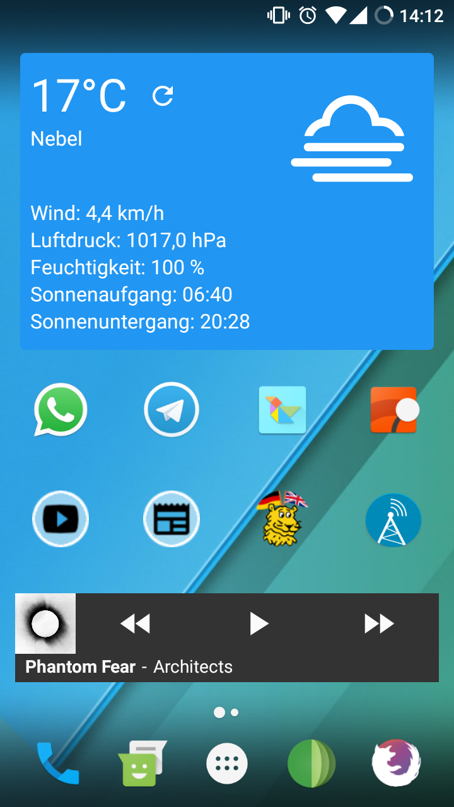

Experience with LineageOS
Posted: 26-08-2017, Edit: 27-08-2017
Mainly, I couldn't connect to my University's WiFi anymore (neither Eduroam). Also there were constant issues with my phone disconnecting from any network when the screen was turned off or locked. Thirdly, BQ doesn't provide updates for it anymore, so I was stuck at Android 6.0.
Here comes LineageOS


The install went surprisingly smooth, easy and quick. Within an hour, I had downloaded the image, installed a new bootloader, backed-up the original image and installed Lineage.
I did not install GApps, as I find the rather instrusive and frankly useless to me. I almost exclusively use the default (minimalistic) LineageOS Apps and some from F-Droid. I also installed two or three apps from the Playstore with "Yalp Store" - which is an opensource client for it.
Without the GApps I could limit my storage-usage quite dramatically and feel better about my privacy at the same time. I can still do whatever I feel like and will be receiving Android-Updates for the entire foreseeable future! :)
If you want to know, which Apps I use exactly, here is a list!
LineageOS Default
Browser
Files
Gallery
Camera
Music
Trebuchet (Launcher)
F-Droid
AntennaPod (Podcasts)
AnySoftKeyboard (Keyboard)
Firefox Focus (Private Browser)
Forecastie (Weather)
Simple Calendar
MGit (Git-Client)
NewPipe (YouTube Player)
OSMAnd (Offlien-Maps based on OpenStreetMaps)
Slide (Reddit-Client)
Telegram (Messenger)
Twidere (Twitter and Mastodon Client)
Yalp Store (Playstore Client)
Playstore
DB Navigator (Client for "Deutsche Bahn" public transport)
iMensa (canteens of german universities)
WhatsApp (messenger)
For any further comments, make sure to hit me up via Mail, IRC, Twitter or Mastadon.